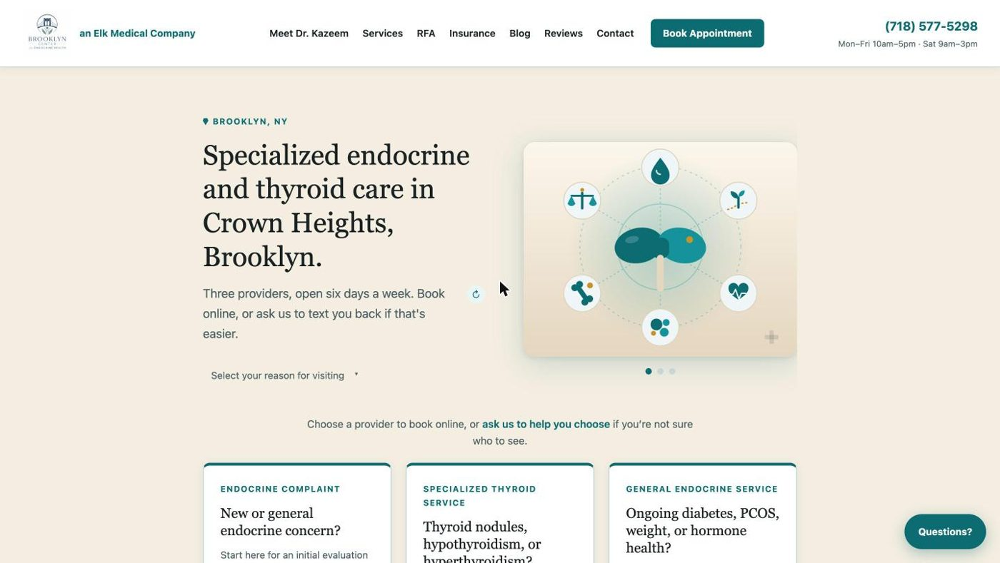
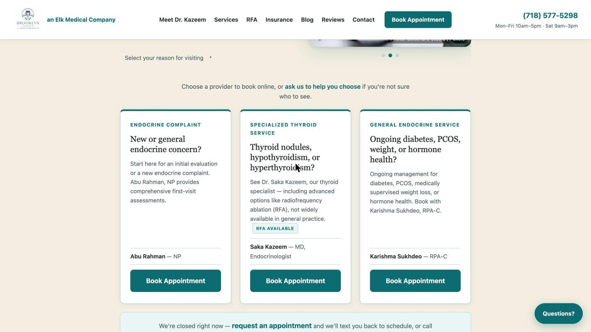
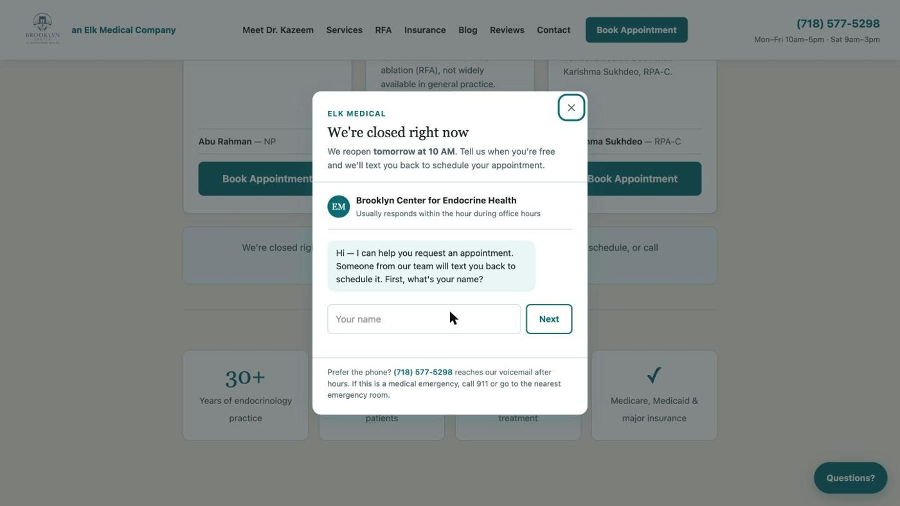
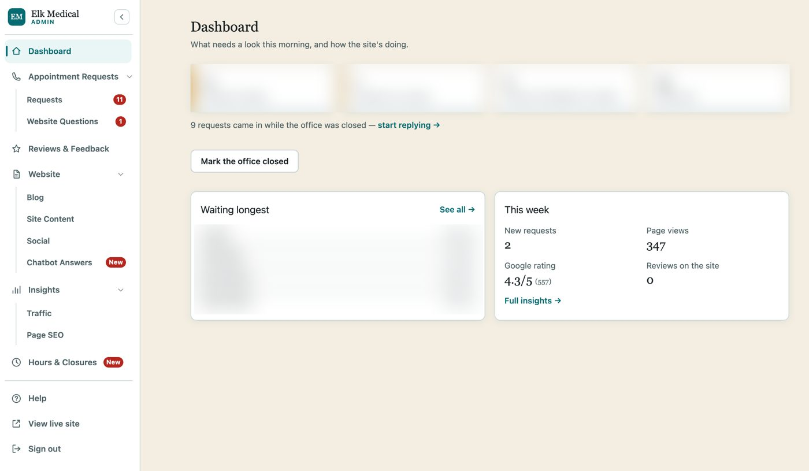
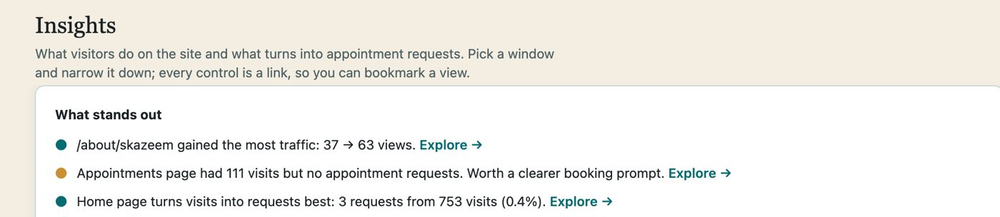

A practice operating system for a Brooklyn endocrine clinic
Elk Medical moved its digital work from Tebra to SDBE. We built one connected system: a booking site that routes each patient to the right provider, after-hours request capture, staff dashboards and plain-English insights.
Source: elkmedny.com and the Elk admin system, November 2026
A specialist practice that chose a partner over a platform
Brooklyn Center for Endocrine Health is part of Elk Medical. Three providers cover thyroid care (including radiofrequency ablation for nodules), diabetes, PCOS, weight and hormone health.
The practice had its website, web activity and tech support on Tebra. Dr Saka Kazeem moved that work to SDBE, which now builds and runs the practice’s whole digital setup.

What the digital setup had to do
Route patients correctly
Send each new patient to the right provider without the front desk sorting every call by hand.
Never lose an after-hours enquiry
Capture requests when the office is closed and follow up the next morning.
One place for staff
Requests, questions, reviews, content and hours managed from one dashboard.
Know what the site is doing
Plain-English insight into which pages bring in appointment requests.
One path from first visit to booked appointment
Booking by condition, not by doctor’s name
Patients choose what they need: a new concern, thyroid, or diabetes, PCOS and weight. Each option books the right provider directly. Radiofrequency ablation is flagged up front because few general practices offer it. Years in practice, providers accepting new patients and insurance accepted all sit on the homepage, so trust is built before the click.

After-hours capture
Staff set opening hours and closures in the dashboard. Outside those hours the site switches to request mode: a short conversation, one question at a time, ending with a promise of a text-back to schedule. Every screen points to the phone line, and to 911 for emergencies. This was the practice’s main ask. It is built and tested, and goes fully live once the practice’s after-hours coordinator starts.

A dashboard written for the front desk
The admin opens with “What needs a look this morning, and how the site’s doing.” During testing it flagged 9 requests that came in while the office was closed, each one a call that would otherwise have gone to voicemail. Staff run the blog, site content, social, chatbot answers, reviews, and hours and closures without a developer. There is a separate front desk view.

Analytics that tell staff what to fix
The insights page measures which pages turn visits into appointment requests, not just page views, and says what to do next in plain English. It has already flagged the next fix: the appointments page gets visits but few requests.

Content and search
A 10-part “GLP-1 and Muscle Health” series runs on LinkedIn and Facebook twice a week, built from the practice’s own patient booklet, so nothing medical had to be written from scratch. Staff manage 15 blog posts with page SEO tracked alongside. The old brooklynendocrinology.com address now redirects to elkmedny.com, so search signals build on one domain.
Where it stands, and what we measure from launch
- Website, booking funnel and staff dashboards built and working
- After-hours capture built and tested with real requests
- The practice moved its digital work from Tebra to SDBE and is on two ongoing retainers
- Full launch next, with results tracked from day one
| Tracked from launch | Why it matters |
|---|---|
| Appointment requests per month | The core outcome |
| Requests captured after hours | Calls that used to go to voicemail |
| Time from request to reply | Speed wins the booking |
| Share of visits that become a request | Shows which pages to fix |
Results are deliberately not claimed yet. The baseline is recorded at launch and the first 30-day numbers will be added here.
What the practice says
“It’s working beautifully, properly structured and clean. Working with Philips is stress-free. He’s very proactive and meets his deliverables.”
Dr Saka Kazeem, MD · Endocrinologist, Brooklyn Center for Endocrine Health
“This is way better than the Tebra website, and cleaner.”
Amy · Director, Elk Medical
Live site: elkmedny.com